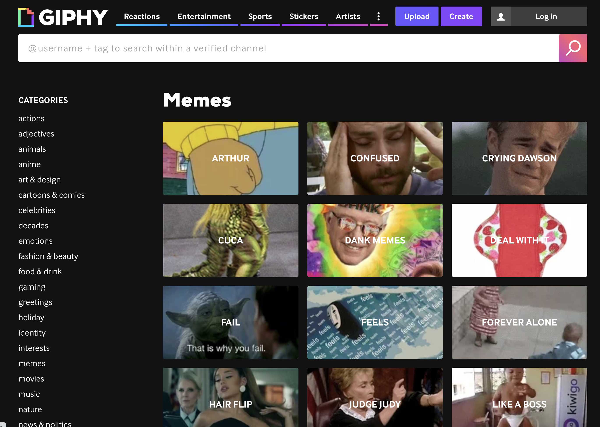
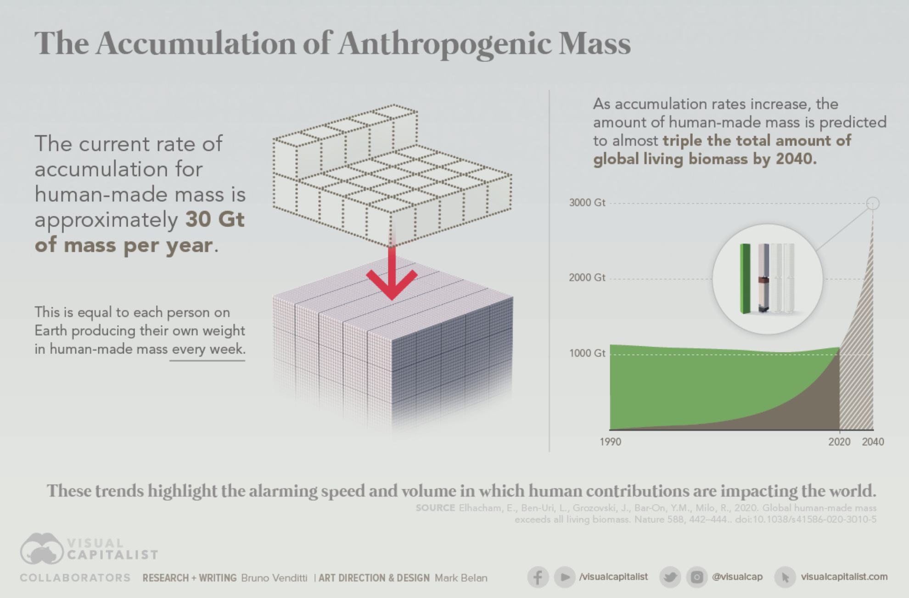

L9. 인공물의 진화
디지털 시대의 새로운 가능성
수업 목표
- 인공물의 영향력 증가와 인공물의 진화를 설명하는 문화진화론에 대해 이해한다.
- 인공물의 진화와 디지털 전환의 의미에 대해 이해한다.
- 인공지능과 인간지능의 공통점과 차이점에 대해 이해한다.
인공물의 폭발적 증가와 문화진화론
문화진화론 일반
- 문화란 무엇인가?
- Universal Darwinism
meme이란 무엇인가?
meme이란 무엇인가?
“Examples of memes are tunes, ideas, catch-phrases, clothes fashions, ways of making pots or of building arches.” by Ricard Dawkins(1976)

문화진화론이란?
💡 보편 다윈주의(Universal Darwinism)
1️⃣ 변이(variation)
2️⃣ 대물림(inheritance)
3️⃣ 차별적 적합도(differential fitness)
- 위의 세 가지 조건만 만족하면 그것이 무엇이든 자연선택에 의한 진화가 일어날 수 있다는 이론
- 다윈이 종의 기원에서 처음 자연 선택 원리에 대해서 설명할 때 세 가지 조건 외에 다른 조건은 언급하지 않았음.
문화진화론이란?
- 사람들 사이의 사회적 학습에 의해 정보가 전달되는 과정이 위의 세가지 조건을 만족한다면 다윈주의적(Darwinian) 문화진화가 가능함.
- 모방 등의 사회적 학습을 통해 전달되는 정보는 원본을 모방하기 때문에 서로 닮는다.(2️⃣ 대물림 조건)
- 모방 과정에서 완벽한 복제는 일어나지 않고 변이가 일어난다.(1️⃣ 변이 조건)
- 각각의 행동 변이들은 각기 다른 생존 능력을 갖는다.(3️⃣ 차별적 적합도 조건)
문화진화론이란?
학문 연구(academic research), 기술(tech), 스킬(skill), 유행(fads), 문학(literature) 등이 유지되기 위해서는 모방 등의 사회적 학습이 필수적
바둑을 둘 줄 아는 학생이 계신가요?
문화진화론이 나오게 된 배경
- 진화론이 다윈에 의해 정립됨
- 다윈의 진화론과 멘델의 유전학을 통합시킨 현대적 종합
- 이러한 배경에서 나온 진화심리학
- 그러나 인간의 마음은 생물학적인 요인만으로 설명하기 어려움
- 종교, 유행, 기술, 인공물 등
문화진화론의 전통적 사례
- 낙농업과 젖당분해효소


문화진화론의 사례
- 또 어떤 사례가 있을까?
문화의 힘

참고자료 출처 : Link
성공의 기준: Biomass

- 기원전 10000년 가축을 처음 기르기 시작한뒤 육상 척추 동물의 분포 변화
- 완전한 역전
인공물의 진화
- 인공물의 비중


참고자료 출처 : Link
성공의 기준: Anthropogenic mass

참고자료 출처 : Link
IT 서비스의 지위
탄소의 양이 아니라 정보의 양으로 생각한다면 IT 서비스의 지위는 어느 정도일까?
세계 최대 규모의 장서량을 자랑하는 미국 의회도서관이 200여 년에 걸쳐 수집한 자료보다 훨씬 많은 양의 자료를 15분 내 컴퓨터에 저장할 수 있다.
실시간 통계사이트 ’Worldometers’에 따르면, 현대인은 하루에 2,100억 개 이상의 e-mail을 주고받는다고 한다. 이러한 하루 정보량은 20세기 초로 따지면 전 세계인의 평생 정보량과 맞먹을 정도다. 심지어 인류 5000년간 축적된 데이터가 단 하루 만에 생성된다.
IT 서비스의 지위

문화에 대한 진화적 접근들
- 진화심리학
- 이중 대물림 이론
- 밈 이론
이중 대물림 이론
- 문화를 학습하는 능력은 오랜 세월에 걸쳐 자연선택된 심리 기제에서 유래한다.
- 인간의 문화 학습 기제는 유전적 대물림과 다르게 작동되는 새로운 대물림 체계, 즉 문화적 진화를 낳았다.
- 유전적 진화가 문화적 진화를 낳지만, 역으로 문화적 진화도 개체군 내의 유전자 빈도를 변화시키는 선택압으로 작용한다.
밈 이론
- 유전자에 상응하는 문화 대물림의 단위를 밈이라고 명명하면서, 문화적 진화는 유전적 진화와 완전히 독립적으로 작용한다고 주장
- 성공적인 밈은 마치 기생체처럼 자신의 복제 성공도를 높이는 일에만 몰두할 뿐, 숙주인 인간의 적합도를 높이는 일 따위는 신경쓰지 않는다고 말한다.
문화의 종류
- 메타문화
- 유발된 문화
- 전달된 문화
메타문화
- 인류학자 도널드 브라운
- 모든 문화에 보편적으로 존재하는 문화적 규범, 가치, 관습 등의 방대한 목록을 작성
- 진화심리학자 도널드 시몬스와의 내기
- 다양한 상대와의 일시적인 성관계를 추구하는 성향에 있어 성차가 모든 문화에서 보편적이라고 주장하였고, 브라운은 성차가 반대로 나타나는 문화를 찾아 보이겠노라고 장담.
- 내기 결과 성차가 역전되어 나타나는 문화는 한 군데도 찾을 수 없었고 이후 브라운은 열렬한 진화학자가 됨.
메타문화
- 200가지 이상의 문화적 보편들
- 여성의 육아에 대한 더 많은 기여, 장례, 근친상간 금기, 도구 제작, 뱀에 대한 공포, 색깔 분류 체계, 성 역할 분화, 강간, 경제적 불평등, 단 음식 선호, 남성의 더 높은 공격성, 유아의 낯가림, 논리적 개념, 사랑, 음악, 성적 질투, 문법, 식물 분류, 요리, 대명사, 자민족 중심주의, 종교의식, 춤, 친족 분류, 속담, 미래를 예언하려는 시도, 사회화, 상징, 텃세, 협동 등
메타문화
- 우리의 마음을 이루는 진화된 심리 기제들은 외부 환경에서 입력된 특정한 정보를 처리하여 과거의 진화적인 환경에서 번식 성공도를 높여준 행동을 산출하는 기능을 수행.
- 만일 마음에 입력되는 환경 정보가 지구 어디에서나 동일하다면, 인간의 보편적 심리 기제는 문화를 막론하고 동일한 행동을 산출하게 된다.
- 이처럼 보든 인간들이 보편적으로 지니는 진화된 심리 기제가 전 세계 어디서나 동일한 환경적 입력을 처리함으로써 나타난 문화적 보편들의 묶음을 메타문화라한다.
문화 다양성에 대한 설명
- 진화심리학에서는 전통적인 사회과학 모델이 지칭하는 문화의 차이, 즉 집단 간의 가치나 행동 양식 등의 차이는 전달(transmission)과 유발(evocation)이라는 각기 다른 요인들에 의해 설명된다고 본다.
- 첫째, 어떤 문화적 변이는 사회적 학습이나 모방을 통해 개체군 사이에 혹은 개체군 내의 구성원 사이에 ’전달’된다.
- 둘째, 어떤 문화적 변이는 모든 인간이 보편적인 심리 기제를 공유하지만 집단에 따라 사회적, 생태적 환경 조건은 각기 다르고, 따라서 이에 반응하여 산출되는 행동도 각기 다르기 때문에 생긴다. 즉, 보편적인 심리기제에 상이한 환경 정보들이 입력되어 상이한 결과를 ’유발’한다는 것이다.
유발된 문화
- 유발된 문화라는 개념은 집단 간 동일성은 생물학이 담당하고 집단 간 차이는 문화가 담당한다는 기존의 이분법적 사고를 넘어서는 통합적 시각을 제공한다.
- 투비와 코스미디스는 유발된 문화를 ’위도와 경도에 반응하여 각기 다른 노래를 틀게끔 설계된 주크박스’에 비유하여 설명한다.
- 집단주의/개인주의 문화적 차이도 각 지역의 토착 병원균의 유행 수준에 따라 유발된 변이로 설명
- 병원균이 많은 곳에서는 외부인과의 접촉을 특히 더 피해야함.
전달된 문화
- 사회적 학습이나 모방, 교육 등에 의해 사람들 사이에 믿음, 가치, 관습, 아이디어가 전달되는 과정을 담당하는 심리 기제의 적응적 특질을 주로 연구한다.
- 유전적 진화와 유사하지만 독자적인 전달 규칙을 따르는 문화적 진화가 어떻게 작동하는지,
- 유전자-문화 공진화는 어떻게 진행되는지가 주요한 연구과제
유기체 중심주의
- 위에서 설명한 메타문화, 유발된 문화, 전달된 문화 모두 유기체를 중심으로 기술이 되어 있음.
- 유기체와 더불어 문화 콘텐츠나 기술 자체의 주체성의 관점에서 바라볼 필요성
- “항해에서 돌아오는 배를 복제하라!”
- 해당 인공물과 정보가 훔칠 가치가 있는가?
토론 거리
- 앞서 이야기한 인공물과 정보의 영향력을 고려할 때 메타문화, 유발된 문화, 전달된 문화의 구분이 갖는 한계에 대해 이야기 해봅시다.
- 플라스틱, PC, 스마트폰 등은 위 구분으로 보면 당연히 전달된 문화이지만 보편적 문화라고 보지 않을 이유가 있는가?
- 지난 시간 유기체에 적응적이지 않아도 문화 자체의 적응에 의해 복잡한 구조가 채택된 사례들을 고려했는데, 반대로 유기체의 효용에 도움이 되어 나온 전달된 문화가 유기체게 부적응적으로 변화하는 사례는 무엇이 있는가?

인공물의 진화와 디지털 전환의 의미
판도라의 상자를 열다.

유전자와 밈과 팀(by Susan Blackmore)
인간을 제외한 모든 생명은 유전자 기계이다. 인간은 유전자 기계이면서 동시에 밈 기계이다.
첫 번째 복제자 : 유전자(gene)
두 번째 복제자 : 밈(meme)
세 번째 복제자 : 팀(teme) 2016년 이후 트림(treme)으로 용어 변경
meme과 treme
- 5000년 전 쓰기의 발달: 표상을 외부에 저장하는 방식
- treme이 가능하기 위해서는 변이, 선택, 복제가 인간 밖에서 이뤄져야 함.
- 디지털 기술의 발달이 이러한 과정을 가속화 하였음.
treme의 관심사
- 지구상의 어떤 것에도 주의를 기울이지 않는다.
- 자원을 빨아들이고 널리 퍼지는 것만을 생각한다.
- treme은 최초에는 자기복제자인 인간을 이용하는 방식을 활용한다.
문화의 DNA와 HTML
- 지금 문화의 DNA는 없지만, 미래에는 HTML이나 그 후손들이 우세해져서 HTML로 표상되지 않고는 그 어떤 밈도 이 복잡한 정보 세계에서 ’눈알’과 ’귀’를 사로잡기 위한 경쟁을 펼칠 수 없게 될지도 모른다.
- 지금은 콘텐츠를 검색하여 인식하거나 식별할 수 있는 봇과 앱이 있다.
- 이러한 봇과 앱의 후손들이 가치 판단을 시작한다면, 즉 인간의 눈이나 귀, 두뇌에 조금도 의존하지 않고 밈들의 차등 복제를 조장한다면, 근 미래의 밈들은 인간의 직접적인 개입 없이 번성할 수도 있음.
- 대중음악과 인터넷 밈의 디지털 세계에서는 인간의 판단이 퇴임 또는 소외되는 일이 시작되고 있다.
외계 지능을 찾기 위한 노력(드레이크 방정식)
\[\displaystyle N=R_{*}\cdot f_{\mathrm {p} }\cdot n_{\mathrm {e} }\cdot f_{\mathrm {l} }\cdot f_{\mathrm {i} }\cdot f_{\mathrm {c} }\cdot L\]
- N: 우리은하 안에 존재하는 교신이 가능한 문명의 수
- R*: 우리은하 안에서의 평균 항성 탄생 비율.
- fp: 항성이 행성을 가지는 비율.
- ne: 항성에 속한 행성 중에서 생명체가 살 수 있는 행성의 수.
- fl: 조건을 갖춘 행성에서 실제로 생명체가 탄생할 확률.
- fi: 탄생한 생명체가 지적 문명으로 진화할 확률.
- fc: 지적 문명이 다른 별에 자신의 존재를 알릴 수 있는 통신 기술을 가질 확률.
- L: 해당 지적 문명이 실제로 우주로 신호를 보내는 기간.
지능이 아니라 복제자를 찾자
\[\displaystyle N=n\cdot f_{\mathrm {R1} }\cdot f_{\mathrm {R2} }\cdot f_{\mathrm {R3} }\cdot L\]
- n : 우리은하에서 행성의 수
- fR1: 첫번째 복제자가 있는 행성의 비율
- fR2: 두번째 복제자가 있는 행성의 비율
- fR3: 세번째 복제자가 있는 행성의 비율
- L: 세번째 복제자가 생존할 수 있는 행성의 수명 비율
복제자가 나타나는 것은 매우 위험함
- 복제자는 세상에 나와서 유지될 수도 있고 그렇지 않을 수도 있다.
- 새로운 복제자는 기존의 복제자를 절멸에 빠뜨릴 수도 있다.
- 새로운 복제자는 기존의 복제자와 공진화 할 수 있다.
- 첫번째 복제자와 두번째 복제자의 공진화 과정
- 뇌의 크기와 산도
- 홀로 아이를 낳기 힘들정도로 산도에 비해 머리의 크기가 크다.
- 뇌의 크기와 산도
- 두번째, 세번째 복제자가 기존의 복제자들을 위협하는 사례
- 원자력 발전, 핵무기 등
인공’물’과 인공’지능’
- 인공지능 : 새로운 종류의 인공물
- 인간이 만들어낸 거대한 입력 자료를 바탕으로 통계적 조작을 통해 가장 그럴듯한 출력물을 도출해줌.
GUI 혁명

GUI 혁명
- 일상적인 의미 조작을 통해 연산력을 갖추게 됨.
- GUI 세계는 물리적 환경의 법칙과는 독립적으로 상상하는 모든 것이 가능함.
생성 AI 혁명
- 거대 언어모델을 기반으로 사용자가 자연어를 통해서 지식을 생성하고 PC가 할 수 있는 형태의 업무를 직접적으로 지시할 수 있게 됨
User interface evolution

인공물과 소통하는 방식의 변화
- 앞서 이야기했듯 treme은 최초에는 자기복제자인 인간에 의존하는 방식을 채택할 수 밖에 없음.
- 인간은 교육을 통해서 ’쓰기’능력을 후대에 전달하고, 최근에는 digital literacy 교육을 통해 GUI 등의 human-computer interface를 잘 다룰 수 있는 능력을 전수한다.
- 생성 AI 혁명은 컴퓨터와 소통하는 방식에 또 다른 변화를 불러오고 있다.
토론거리
- 인공물과 소통하는 방식에 있어 GUI 혁명과 생성 AI 혁명의 근본적인 차이는 무엇일까?
- 그리고 생성 AI 혁명과 전환이 새로운 복제자의 확산에 어떤 영향을 줄 것인지 생각보세요!(생산성 비교)
- GUI의 중요성이 어떻게 변화할지?

인공지능과 인간지능의 공통점과 차이점
지능의 탄생

소저너 호(1997)

소저너 호(1997)
- 지구의 과학자들이 실시간으로 명령을 전달할 수 있는 상황이 아님. 25분의 전송시차가 존재
- 소저너의 경우 착륙선인 패스파인더가 찍은 주변 사진을 통해 지구의 과학자들이 환경을 재구성하여 소저너가 이동해야하는 경로 선택 및 이동에 필요한 명령을 패스파인더에 보내고 패스파인더가 다시 소저너에 명령을 전달하는 방식
- 하루에 평균 1미터 약간 넘는 거리를 주행할 수 있었음.
스피릿과 오퍼튜니티(2004)

스피릿과 오퍼튜니티(2004)
- 소저너보다 15배 이상 무거움(180kg)
- 쌍둥이 로버의 태양전지는 재충전이 가능해서 태양이 없는 시간에도 전기를 이용해서 자신들의 온도를 조절할 수 있다.
- 쌍둥이 로버에 장착된 인공지능은 두 가지 중요한 문제를 해결해야 한다.
- 첫 번째 문제 : 로버 스스로 화성 현지의 상황을 고려해서 지구에 있는 과학자가 정해준 목적지까지 이동해갈 수 있는 증력
- 두 번째 문제 : 영상데이터를 분석하고 편집해서 중요한 내용을 선별적으로 지구로 전송할 수 있는 능력
화성으로 간 인공지능
- 로버를 화성으로 보낸 원래의 목적은 인간을 대신해서 화성 탐사를 하는 것
- 로버가 인공지능을 갖게 된 이후에는 로버 스스로 독자적인 의사결정을 하게 되었음.
- 본인-대리인의 문제
본인-대리인 문제
- 기업과 고용인의 관계
- 지주와 농작인의 관계
- 보험회사와 보험가입자의 관계
- 정보 비대칭성이 초래하는 문제를 분석하는데 적용됨.
- 도덕적 해이와 역선택
본인-대리인 관계의 조건
- 대리인의 행동이 본인에게 돌아가는 수익에 어떤 식으로든 영향을 미쳐야 한다.
- 대리인이 본인에게 없는 정보를 갖고 있어야 한다.
- 본인-대리인 관계에서는 본인이 계약의 주도권을 갖는다.
- 본인과 대리인이 원하는 바가 완전히 일치하지 않는다.
- 본인과 대리인은 합리적인 선택을 한다.
유전자(본인)와 뇌(대리인)의 관계
- 뇌가 하는 선택은 결국 유전자가 얼마나 복제될 것인지에 영향을 미친다.
- 뇌가 발달과정에서 얻게 되는 정보들은 유전자에 저장되어 있지 않다.
- 결국은 유전자가 뇌의 형성과 발달에 핵심적인 역할을 함으로써 주도권을 갖고 있다.
- 이기적인 뇌는 자신의 안전과 쾌락을 위해서 유전자의 이익에 반하는 행동을 선택할 수도 있다.
- 유전자와 뇌는 둘 다 합리적인 선택을 한다.
유전자가 개체가 겪게 되는 모든 문제들을 해결하기는 어려움. 유전자는 뇌를 만들고 뇌는 권한은 위임받아 문제를 해결하는 방식으로 분업을 함.
본인-대리인 문제에 대한 해결책 : 학습
- 뇌가 스스로 선택한 행동에 따른 결과에 대해 다른 보상을 받을 수 있게 설계
- 뇌는 결과와 보상을 예측하고 계산해야 한다.
- 행동의 결과가 동물의 환경에 따라 언제라도 변화할 수 있기 때문에 뇌는 환경의 변화에 적응하기 위해서 끊임없는 학습을 해야만 한다.
다시 화성으로 간 인공지능
- 화성으로 간 로버(대리인)가 독자적인 의사결정을 한다고 했을때, 연구자(본인)의 본래 목적에 많이 이탈하는 경우가 아니라면 현장의 정보에 대해 더 잘 ‘알고’ 있는 로버의 판단에 위임을 하는 것이 더 유리함.
- 뇌와 화성의 로버에 깔려 있는 인공지능 모두 서로 principal의 문제를 풀기 위한 대리인의 역할을 한다고 했을때 차이는 무엇일까?
특이점이 온다

인공지능은 인간지능과 어떻게 다른가? (in 지능의 탄생)
- 인공지능의 문제풀이 능력은 극히 제한적이다.
- 인공지능의 문제풀이는 인공지능 그 자신을 위한 것이 아니다. 악기로 아름다운 음악을 연주할 경우, 그것을 악기가 아니라 악기를 만들고 연주한 사람의 예술성의 표현이라고 보아야하는 것과 마찬가지
- 아직 인간의 뇌가 어떻게 정보를 처리하고 저장하는지 완전히 이해하지 못하고 있다.
튜링 테스트(이미테이션 게임)

chatGPT 의 튜링 테스트
- 구글의 LaMDA에 이어 chatGPT도 튜링 테스트를 통과
- 인공지능이 일상적인 대화에서 사람과 구별될 수 없는 정도라고 한다면 인공지능을 인간 수준의 지능이 있다고 이야기 해도 되는 것 아닌가?
인공지능이 도덕성과 관련된 인간의 위력도 생성할 수 있는가?
- 인간의 수준이라는 것
- 지적인 부분, 정서적인 부분, 성적인 부분 등 다양한 영역에서 테스트 해볼 수 있음.
- 영화 <그녀>, <엑스 마키나> 등
인간지능에 특권을 부여하려는 시도
- “박쥐가 된다는 것은 어떤 것인가?”
- ‘중국어 방 논변’
- ‘색채학자 메리 논변’
박쥐가 된다는 것은 어떤 것인가?(토마스 네이글)
음파로 주위의 환경을 파악하는 박쥐의 고유 감각기관을 인간이 가지고 있지 않다.
설령 박쥐의 감각기관을 이식받는다 해도 박쥐로 태어나 박쥐로 경험하고 살아간 박쥐를 온전히 이해하는 것은 불가능하다고 말한다.
감각기관등을 통해서 얻는 고유한 느낌과 같은 것들은 객관적이고 물리적인 사실들을 통해서 전달될 수 없다.
박쥐가 된다는 것은 어떤 것인가?(토마스 네이글)
박쥐의 감각기관을 물리적으로 충분히 구체적으로 구현한 로봇이 있다고 하더라도 해당 로봇이 박쥐의 진정한 의식상태를 느끼지는 못할 것이라는 주장
그러나 이러한 주장은 공허한 승리!
이러한 본유 속성으로서의 의식이 존재한다고 믿을 이유가 전혀 없음.
중국어방 논변(존 설)

중국어방 논변(존 설)
- 영어를 중국어로 번역해 주는 방.
- 안에 들어있는 사람은 영어는 하나 중국어를 모르는 사람. 문틈으로 영어로 된 내용을 받으면 방안에 있는 사람은 규칙집을 참고하여 아주 기계적인 방식으로 한자를 조합하여 작성
- 이후 결과를 밖으로 내보낸다.
- 이 방은 번역을 하는 인공지능의 작동방식과 정확히 같다. 그러나 내부구조를 보면 중국어를 ’이해’하고 있는 것은 하나도 없다.
- 따라서 인공지능은 사람이 이해를 하는 것과 같이 이해하지 못한다.
중국어방 논변에 대한 비판
- 시스템 답변(버클리) Systems Reply(Berkeley)
방에 갇힌 사람이 중국어를 이해하지 못하는 것은 사실이지만, 그는 전체 시스템의 일부에 불과하며 시스템은 중국어를 이해한다. 이 사람 앞에는 규칙이 적힌 커다란 두루마리, 계산하는 데 쓸 종잇조각과 연필, 한자 일람표가 있다. 그렇다면 이해는 한낱 개인에게 부여되는 것이 아니라 그가 속한 시스템 전체에 부여된다.
메리 논변(프랭크 잭슨)

메리 논변(프랭크 잭슨)
- 태어날 때부터 강제로 흑백의 방에서 흑백의 모니터를 통해 세상을 연구한 메리라는 과학자가 있다. 그녀는 색에 관한 모든 물리적 사실을 학습하게 되었다. 어느날 메리가 그 방에서 나와 실제 물체로부터 나오는 색을 마주하게 되었을 때, 그녀는 새로운 사실을 배운 것이 있을까? 아니면 원래 알던 것들이기 때문에 당연하게 받아들이게 될까?
- 잭슨은 메리가 분명히 새롭게 배우는 것이 있을 것이며 이러한 것은 물리적으로 설명되지 않는 의식 고유의 현상이라고 주장.
메리 논변에 대한 비판
- “흑백의 방에서 흑백의 모니터를 ‘통해’”
- 색에 관한 모든 물리적 사실
인공/인간 지능에 대한 데넷의 견해
- 의식은 과학적으로 설명될 수 없는 본유 속성이 아니다.
- 일반적 지능을 갖춘 강한 인공지능이 원리적으로 불가능 한 것은 아니다.
- 그렇지만 현재 딥러닝을 기반으로 한 인공지능은 현실적으로 일반 지능이라고 부르기 어려우며 인간에 의존적일 수 밖에 없다.
- 하지만 이 ’도구’가 없었던 인간과 가지게 된 인간은 큰 차이가 있음에 분명하다.
사용자-환각으로서의 인간의 의식
- 스마트폰에 깔린 앱 전체를 그 하드웨어 회로 설계와 메모리의 비트열만으로 (사용자 인터페이스를 보지 않고) 하의상달식으로 기술하고 설명해보겠다는 목표는 달성하기 요원하다.
- 앱의 사용자 인터페이스는 앱이 어떻게 작동하는지 그 복잡한 세부 사항을 알지 못하고 또 알 필요도 없는 사용자(우리)도 그 앱의 능력을 이용할 수 있게 하기 위해 존재
- 우리 뇌 안에 저장된 그 모든 앱의 사용자-환각도 같은 이유에서 존재한다.
- 그 복잡한 상세를 알 수 없고 또 알 필요도 없는 사용자(다른 사람들)가 우리의 능력을 (어느 정도) 사용할 수 있게 만들어주는 것이다.
- 그런 다음 우리는, 우리 뇌 안의 손님들과 대략 같은 조건에서, 우리 스스로 그것들을 사용하게 된다.
전통적 AI에 대한 비판
- 에너지 포획과 자기 보호의 필요를 도외시함으로써 자신들의 탐색을 기생적 체계로 제한하여 인간 유지,보수자들에게 늘 의존하는, 마음설계자 지망생
- 구글 번역은 이중 언어 능통자들이 해놓은 수백만 건의 좋은 번역을 끌어다 쓰고 있음.
- 왓슨이 섭렵하고 있는 무시무시할 정도로 방대한 사실적 지식 역시 왓슨이 인터넷에서 매일 흡입하는 수백만 페이지의 정보에 의존
- 이 프로그램들은 거인들의 어깨에 서서 지성적 설계의 앞선 산물들이 드러내 보이는 모든 영리함을 마음껏 사용하고 있음.
인공지능의 의미
- 왓슨은 아주 깊은 곳에서부터 다윈주의적이다.
- 끊임없이 그리고 이해력 없이 이미 일어난 일로부터 정보를 추출하는 과정에 의해 추동됨.
- 왓슨도 자연선택도 그것들의 선택 과정의 범위 내에서 일어나지 않은 사건들의 유형에 대해서는 눈먼 것이나 마찬가지다.(예를들어 학습 데이터의 기반이 된 검색 엔진이 가지고 있는 자료의 시간 제약)
- 인간의 상상력, 즉 현재 우리가 있는 곳에서부터 단순히 언덕을 기어오르는 식으로는 접근 불가능한 현실을 그려낼 수 있는 역량은 우리로 하여금 선견지명 있는 설계를 하여 기회들을 창조하게 하고 그리하여 궁극적으로는 다른 방식으로는 이뤄낼 수 없는 사업과 인공물들까지 창조하게 하는 주요한 게임 체인저인 것으로 보인다.
토론 거리
- AI가 풀기 힘들지만 사람은 풀수 있는 문제를 하나 만들어보시오!
- 생성형 AI를 어떤 방식으로 이해하는 것이 바람직한지에 대한 견해를 나눠봅시다.

강의 요약
강의 요약
- 인공물의 영향력 증가를 통해 문화의 관점에서 세상을 바라보는 관점에 어떤 영향을 주는지 확인했다.
- 디지털 전환이 인공물과 인공지능의 진화에 어떤 역할을 하는지 이해했다.
- 인공지능과 인간지능의 차이에 대한 다양한 의견들을 이해하고 인공지능에 대한 자신만의 생각을 발전시킬 수 있었다.
다음 시간에는…
- 인공지능을 포함한 다양한 기술들과 인간의 관계에 대해서 깊이있게 다뤄볼 예정


인간 본성의 과학적 이해